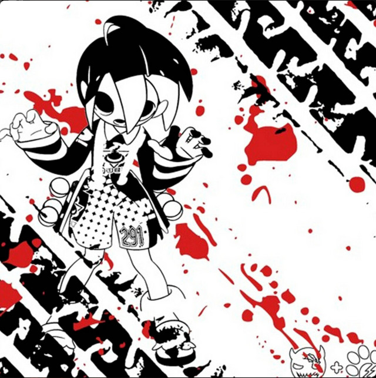

STUDENT * DEVELOPMENT * DESIGN
Let's create
Nice to meet you
Let's create
website together

Nice to meet you
I‘am studying in 6th grade and | am passionate about design. | always liked to create different layouts and visual compositions So recetly I started to learn web design and website development It is sucha fascinating fell | ove experimenting with colours, typography and markup! want to master not only design, but also the basics of programming, hope that in time I wil lear how to create ful-ledged websites. If you are also dnarested in destgn = lets connmmuricatal | vill be ohad to ehare wey ideen.